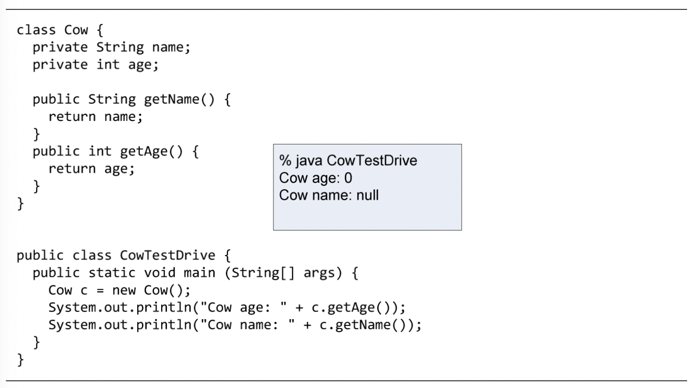

Ta đã biết rằng một lệnh khai báo biến thực thể có ít nhất hai phần: tên biến và kiểu dữ liệu. Ví dụ:
int age;
String name;
Ta còn có thể khởi tạo (gán một giá trị đầu tiên) cho biến ngay tại lệnh khởi tạo:
int age = 2;
String name = "Fido";
Nhưng nếu ta không khởi tạo một biến thực thể, chuyện gì sẽ xảy ra khi ta gọi một phương thức get? Nói cách khác, một biến thực thể có giá trị gì trước khi nó được khởi tạo? Xem lại ví dụ trong Hình 5.6, age và name được khai báo nhưng không được khởi tạo, vậy getAge() và getName() sẽ trả về giá trị gì?
Các biến thực thể luôn có một giá trị mặc định. Nếu ta không gán giá trị cho một biến thực thể, hoặc không gọi một phương thức set để gán trị cho nó, nó vẫn có một giá trị mặc định: 0 nếu biến thuộc kiểu số nguyên, 0.0 nếu biến thuộc kiểu số thực dấu chấm động, false nếu biến thuộc kiểu boolean, null nếu biến là tham chiếu.
Hình 5.9: Giá trị mặc định của biến thực thể
Ví dụ trong Hình 5.9 minh họa giá trị mặc định của hai biến thực thể name và age của lớp Cow. Hai biến này không được khởi tạo, và giá trị mặc định của biến age kiểu int là 0, còn giá trị mặc định của name kiểu tham chiếu là null. Nhớ rằng null có nghĩa là một tham chiếu không chiếu tới một đối tượng nào, hay một cái điều khiển từ xa không điều khiển cái ti vi nào. Ví dụ trong Hình 4.9 ở chương trước cũng đã minh họa việc đọc biến tham chiếu name của đối tượng Cow trước khi nó được khởi tạo.